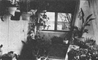

Do you have high energy costs? Dreary surroundings? You can solve both of these problems with...
It's no news to most people that heating or cooling a mobile home can be a very expensive proposition. It may come as a surprise, however, to learn that with only a moderate outlay of money and time, these energy costs can be noticeably reduced. In addition, you can gain a place to grow fresh foods, sturdy seedlings for transplanting to outside beds or containers, and a year-round supply of beautiful flowers to grace the dining table and brighten the home.
I'm speaking, of course, of the benefits you get when you build an attached greenhouse. Mine, a 7' X 24' structure, does all of the above very well; furthermore, its design is simple, its materials are standard, and it can be easily duplicated or adapted by anyone with basic carpentry skills and equipment.
My Albuquerque mobile home is large (24' X 52'), but the construction principles I followed would be the same for any size home. The greenhouse was attached to the south (in my case, 24') end of the home. My son did the designing, wiring, and insulating . . . a hired carpenter did the foundation and framing . . . and I did most of the glazing and finish work. First we removed one window from the adjoining office (originally a bedroom) and replaced it with a door to provide access to the interior of the house. We then poured a 6" X 12" concrete footing and topped it with 6" X 8" X 16" masonry blocks to form the foundation. One foot of pumice was used for ground insulation, while inch-thick sheets of plastic foam were used to insulate the foundation.
Next we constructed the greenhouse framework-out of 2 X 4s-at the proper angle to catch the sun's rays in winter. Authors Rick Fisher and Bill Yanda state in The Food and Heat Producing Solar Greenhouse (John Muir Publications, Inc.) that "a formula . . . for establishing the tilt of the south face is the latitude plus 35 degrees." However, this optimum angle can be varied somewhat without losing much light transmittance.
I used greenhouse-grade fiberglass on the outside of the structure and Monsanto 602 UV . resistant plastic on the inside, creating double walls with a dead air space in between. And by applying sealants at every crack and juncture, I've been able to minimize heat loss.
Ten 55-gallon oil drums were cleaned, painted black, laid side by side on a framework, and filled with water to collect and store the sun's heat for later dissipation at night. We piled river rock on the floor area behind the drums to hold additional warmth. A workbench was constructed over the barrels and a deck laid over the rocks; both platforms were built of 2 X 4s nailed 1/2" apart to provide slots for drainage. The entire interior of the greenhouse can be easily hosed down to remove dust and dirt and to increase the humidity. White paint on the walls, supports, deck, and benches reflects sunlight to all sides of the plants, helping them to grow evenly; as a fringe benefit, it also makes the interior of the structure appear larger and airier than it actually is.
Here in New Mexico the intensity of the sun dictates a solid roof on any dwelling, be it for people, pets, or plants. So I put corrugated metal roofing backed with 6" fiberglass insulation batts above the ceiling in the greenhouse. Since summer sunlight was still too hot and bright for many plants, I set removable panels of inch-thick plastic foam between the 2 X 4s on the outside. In the interior, I installed ordinary window shades upside down along the outer edge of the workbench. I centered a screw eye in the bottom rod of each shade and another screw eye set in the greenhouse framework just above it. Nylon cord was run through the paired screw eyes and knotted, enabling each shade to be raised to the exact height desired for optimum shading of the bench and interior.
Other features include an old kitchen sink-purchased at a junkyard for $10-which was connected to plastic pipe that brings in water from an outside faucet. We also used plastic pipe to make a straight, trapless drain that carries wastewater to a plant bed outside. Clay pots, plastic pots, and 20-gallon plastic garbage pails containing various potting materials are all stored under a bench along the north wall. I place plants needing diffused light and less heat on this bench or hang them from hooks above it.
To make good use of the heat generated in the greenhouse, we installed an exhaust fan and a duct near the ceiling to funnel hot air into the rest of the mobile home, but most of the time the warmth circulates freely without the use of the fan. Outside ventilation is provided by a set of vents and a window on the east end. A used evaporative cooler takes care of most of the structure's air-conditioning needs. Purchased for $25, it was installed on the vent at the east end and often supplies enough cool air for the entire home. [EDITOR'S NOTE: Swamp coolers, as these units are sometimes called, are most effective where the outside humidity is very low, as in the southwestern United States.] I now use the home's main air-conditioning unit only on extremely hot summer days.
Mobile home owners who would prefer a portable greenhouse will find that one similar to mine can be constructed from panels: 8' X 8' is a good, workable size. The two ends of the greenhouse, one side, and the roof can all be held together with slip pins inserted in regular hinges. Barrels can be placed against the mobile home wall or at other strategic places. Freestanding benches can be used for potted plants, or plants can be grown directly in the ground, as in a cold frame. The entire portable unit should be anchored to a foundation of some kind, however, such as concrete blocks or railroad ties.
My greenhouse was built from new materials in 1977. At that time, the total cost-including labor-was $980. A pproximately $500 of that sum was for materials. Today the cost would be higher, of course, but you could save a considerable amount if you built with good used lumber.
And is the whole thing worth it? Absolutely, I say! My greenhouse cut my fuel consumption in half the very first year; meanwhile, my house has been beautified season after season with blossoming geraniums, petunias, begonias, and gloriously fragrant freesias. I feel my initial investment started paying off right at the start, and has kept on doing so, year after year.
|
 An add-on greenhouse can provide a great place to grow plants, furnish heat to your h ome, a nd supply extra living space. |
|
|